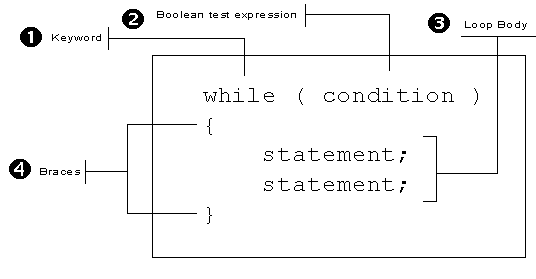

The
The for
loop makes
writing counted loops very easy because it puts the pieces
you need—a place to initialize your counter, a place to test
your counter, and a place to update your counter—all within
easy reach.
You can, however, do exactly the same thing with Java's
simpler, but more general-purpose while loop.
In my mind, though, using a while loop
is just not quite as convenient.
The while Loop Syntax
The while loop, which you can see in the
illustration below, only has three parts:
- the keyword
while - a
booleantest - a loop body

To use the while statement to build
a counted loop, you must do three things:
- Create a counter variable, and initialize it before
the loop starts. This takes the place of the
initialization expression in the
forloop. - Test the counter variable inside the
whilecondition. - Update your counter at the end of the loop body.
This takes the place of the update expression in the
forloop.
Here's the basic skeleton for a counted loop, written
with while:

While Loop Caveats
There are three common errors that often occur when
writing counted loops using while. By learning what
they are, and then checking for each one when you write your
loops, you increase your chances of writing a correct loop the
first time.
Expired Counters
When using the for loop, you usually create
and initialize your counter variables inside the initialization
expression of the for loop. If you forget to do so,
the for loop condition usually looks "empty", which
acts as a reminder.
With the while loop, however, you must define
and initialize your counter outside the
while loop. This has several implications:
- In the
forloop, the scope of the counter variable is restricted to the body of the loop. That is not true for thewhileloop. - If you have several
whileloops, and each of them use the same counter variable name, then you cannot redeclare the variable for each new loop. All of your loops will use the same variable. - You must, however, remember to reinitialize
the counter before each loop, even though you can't
redefine it. Forgetting to do this often leads to
the case of the expired counter. If a counted
whileloop is preceded by another, and both use the same counter variable, you may forget to reinitialize the counter for the second loop. This doesn't create a syntax error, but it does give you the wrong answer.
There are two possible solutions to the expired counter problem.
- If you give all of your counters unique names, you won't run into the problem. Sometimes, however, this is hard to do. Thinking up a new name when you really want to use the common counter names like i, idx, or counter, can be difficult.
- A better solution is to train yourself to always
initialize your counter on the line immediately preceding
the while condition. After a bit, a missing
initialization starts to look as "empty" as the missing
initialization section in a
forloop.
Endless Loops
An endless loop is a loop that doesn't end, because the
loop test condition always evaluates to false. Although
endless loops are sometimes intentionally, most of the time
they are the result of a mistake that you've made when specifying
the loop's exit condition or bounds.
 The problem of endless loops is not unique to counted
The problem of endless loops is not unique to counted
while loops. You can create endless loops in a
variety of ways. Still, a counted while loop lends
itself to endless loops in a way that the others don't. Because the
while loop places the counter update expression at
the bottom of the loop—which may be far removed from the
while loop condition by the time all of the
intervening statements have been added—it is easy to forget it.
With the for loop, leaving out the update
expression creates an "empty" looking loop condition, but not
with the while loop.
The easiest solution to this problem is to use the loop-building strategy presented in this chapter. If you start by first writing the "mechanics" of the loop—bounds, precondition, and update—you are less likely to get distracted by the "real" statements and forget to add the update expression at the end of the loop.
Phantom Semicolon
This last problem is also not restricted to while
loops; it affects selection statements and for
loops as well.

If you put a semicolon after the condition of a while
(or for) loop, the body of the loop becomes the
null statement. Here's an example.
Because of the semicolon, you are saying:
As long as cups is less than ten, do nothing.
This creates two problems:
- If
cupswas originally less than ten, (as in the illustration here), you will have an endless loop. Because nothing in the null body changes the value ofcups, it will remain at its initial value. - If
cupswere greater-than or equal-to ten, you wouldn't have an endless loop, but the statements that were intended to be executed as part of the loop body would be executed exactly once regardless of the test condition.
Where To Now?
After reading the preceding section, you might be
wondering why anyone would bother with while at all.
The for loop seems so much more capable.
That's true for counted loops; if you are going
to write loops that are controlled by a counter, you should
probably use the for loop. But, not all loops, or
even most loops, are counter-controlled. Event controlled loops
are much more common, and there, the while
loop reigns.

Counted while Loops Summary
- The syntax of the
whileloop consists of the keywordwhile, followed by a Boolean condition in parentheses, followed by the statement to execute. If you wish to execute mutliple statements, follow the condition with a block. - The general purpose
whileloop repeats the statements in its body, as long as its Boolean condition istrue. - To write counted loops with
whileyou must create a counter variable before the loop is encountered, test the counter in the loop condition, and update the counter at the end of the loop body. - The pitfall of an expired counter occurs when you fail to initialize your counter to its starting position immediately before your loop begins.
- An endless loop occurs when you fail to update your loop counter at the bottom of the loop body.
- A phantom semicolon, placed after the loop condition,
can lead to either an endless loop or a body that is
executed exactly once, regardless of the condition. In
all cases, placing a semicolon after the
whileloop condition is a logical error.